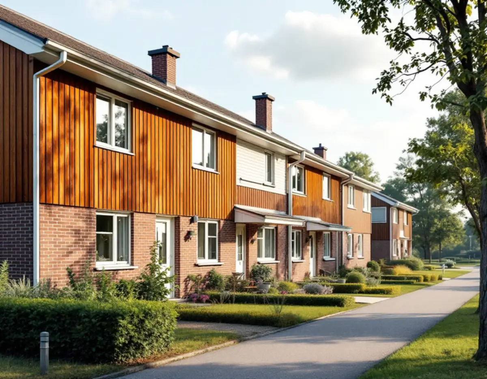
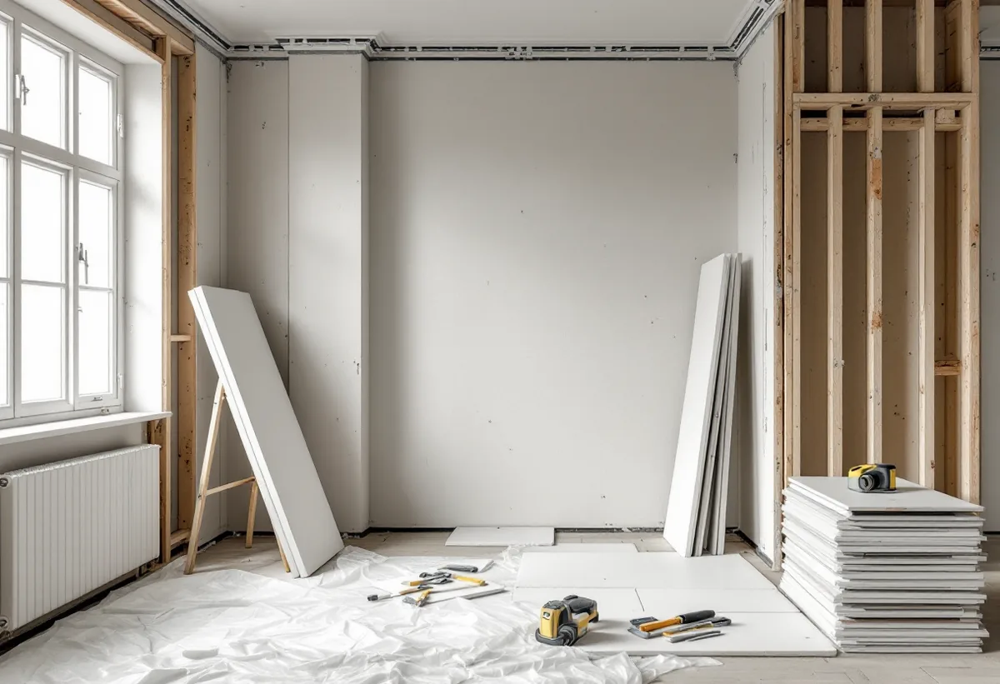
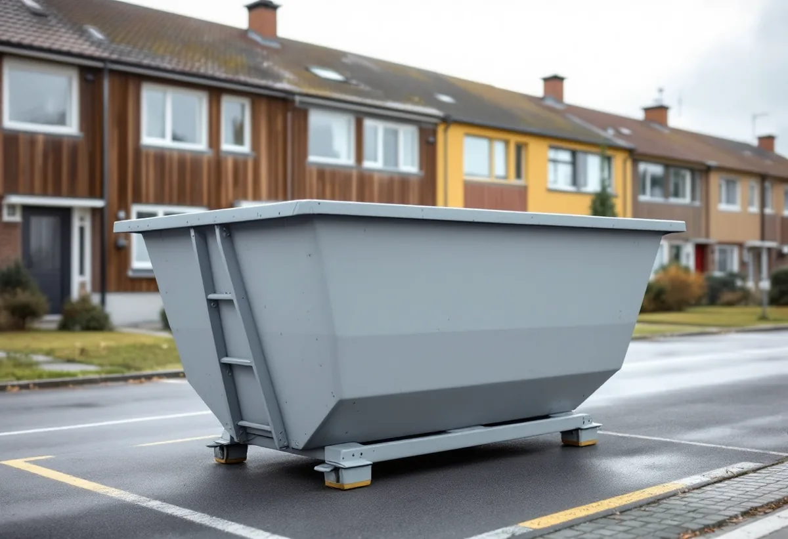

Platsbesök
Gratis besök där vi går igenom huset och dina planer.
Den som äger ett radhus i Skärholmen och bygger om är byggherre, med ett ansvar som finns kvar även när ett byggföretag gör jobbet. Geal Entreprenad AB tar hand om hela ombyggnaden och hjälper dig med det byggherren ska se till.

Stadens områdesfakta för 2025 räknar 1 976 småhus med äganderätt i Skärholmens stadsdelsområde, fördelade på Vårberg, Skärholmen, Sätra och Bredäng. Stadens vägledning Varsam utveckling av småhus- och villaområden beskriver småhusen i de storskaliga stadsdelarna som huvudsakligen radhus och kedjehus, med enstaka villor och atriumhus, till exempel i Sätra.
Äger du huset äger du också ansvaret för det du bygger. Det gäller vare sig du bygger till, gör om planlösningen eller byter fasad.

Boverket beskriver byggherren som den som för egen räkning utför eller låter utföra byggnads- eller rivningsarbeten, och skriver att byggherren ofta också är fastighetsägaren. Byggherren har det yttersta ansvaret för att byggnaden uppfyller bestämmelserna och att rätt kompetens finns med i projektet.
När en åtgärd kräver lov eller anmälan ska byggherren se till att arbetet inte börjar före startbesked, att det kontrolleras enligt kontrollplanen och att det inte tas i bruk före slutbesked. Kräver det inget lov gäller ändå kraven på bland annat utformning, tekniska egenskaper och varsamhet. Vi tar fram handlingar och kontrollplan och följer upp dem under bygget.
Arbetsmiljöverket skriver att en miljöinventering av hälsofarliga ämnen ska göras innan arbetet påbörjas, redan i planeringen. Man ska utgå från att byggnader uppförda fram till 1982 kan innehålla asbest, och det är byggherre, projektör och arbetsgivare som ska se till att en undersökning och eventuell provtagning görs.
Husen i Skärholmen byggdes från 1960-talet och framåt, så inventeringen hör till de första stegen. Hittas asbest planeras saneringen av ett företag med tillstånd innan resten av ombyggnaden börjar.
Behöver en container, en bod eller ett upplag stå på gata eller annan offentlig plats krävs enligt Stockholms stad polistillstånd, och för container, byggbod och upplag dessutom bygglov. Ett glest byggstängsel kräver inget bygglov.
En tillbyggnad på ett radhus får enligt staden vara högst 30 kvadratmeter utan lov, inte högre än husets nock och 4,5 meter från gränsen om inte grannen medger annat. Vägledningen beskriver en mycket stor enhetlighet inom husgrupperna, och Bredäng är markerat som kulturhistoriskt värdefull miljö. Mer om hur vi arbetar finns under byggfirma.
Stockholms stad skriver att man kan logga in med bank-id och se ritningarna till sitt hus, men att ritningar kan vara ofullständiga och att det inte är säkert att de som byggt har följt dem. Staden kan inte bedöma om en planerad ändring påverkar den bärande konstruktionen, utan hänvisar till en konstruktör.
Inför en ombyggnad hämtar vi ritningarna, kontrollerar dem mot huset på plats och tar in en konstruktör när en vägg ska bort. Ändringar i bärande konstruktion kräver anmälan och startbesked.

Gratis besök där vi går igenom huset och dina planer.
Asbest och andra ämnen undersöks före rivning.
Ritningar, lov eller anmälan och kontrollplan.
Container, bod och tillstånd vid behov.
Rivning, stomme, installationer och ytskikt.
Kontroller och dokumentation.
Rotavdraget är 30 procent av arbetskostnaden, högst 50 000 kronor per person och år. Material och resor ger inget avdrag, och du ska äga bostaden när arbetet utförs.
Skatteverket ger rotavdrag för om- och tillbyggnad av ett småhus du äger. För arbete som ger avdrag drar Geal det direkt på fakturan.
Hur mycket som byggs om, om asbest måste saneras, om bärande väggar berörs, behovet av lov och kontrollplan och vilken standard du väljer. Efter ett gratis platsbesök får du ett skriftligt kostnadsförslag.
Total entreprenad för villan.
Byggfirma →Takbyte, takbesiktning och plåtarbeten.
Takläggare i Skärholmen →Radhus i grupper i Bredäng, Sätra och Vårberg.
Takrenovering i Skärholmen →Radhustomterna och grannarna.
Attefallshus i Skärholmen →Radhusen, källarplanet och golvbrunnen.
Badrumsrenovering i Skärholmen →Radhusen från 60- och 70-tal.
Fasadmålning i Skärholmen →Fasader på radhus och kedjehus.
Fasadrenovering i Skärholmen →Radhus i sammanhållna husgrupper.
Fönsterbyte i Skärholmen →Miljonprogrammets radhus.
Fönsterrenovering i Skärholmen →Nya golv i radhus och lägenheter.
Golvläggare i Skärholmen →Parkett och lamellgolv från 1960-talet.
Golvslipning i Skärholmen →1960-talskök, bostadsrätt och radhus.
Köksrenovering i Skärholmen →Lägenheter, trapphus och radhus.
Målare i Skärholmen →Rännor och stuprör i sluttningarna.
Plåtslagare i Skärholmen →Altan, plank och förråd vid radhuset.
Snickare i Skärholmen →Egna radhus i Sätra, Bredäng och Vårberg.
Takbyte i Skärholmen →Ny tapet i hyresrätt och bostadsrätt.
Tapetsering i Skärholmen →Radhusen, uterum och skärmtak.
Tillbyggnad i Skärholmen →Renovera hela huset eller lägenheten.
Totalrenovering i Skärholmen →